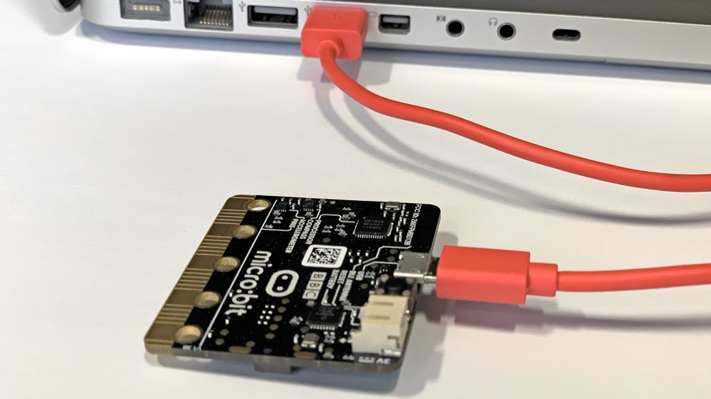
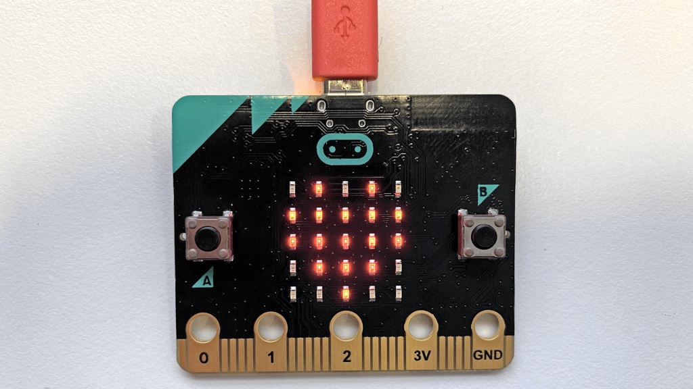

Microsoft Makecode
Anschliessen
Um Programme auf den micro:bit zu laden, schliesse ihn mit dem USB-Kabel an den PC an, siehe Abb 1. Der micro:bit wird über das USB-Kabel mit Strom versorgt und neben dem USB-Stecker beginnt eine LED zu blinken. Für den PC ist der micro:bit wie ein USB-Stick, d.h. es erscheint im Dateimanager ein zusätzliches Laufwerk mit dem Namen MICROBIT.

Abb. 1 – micro:bit der an den PC angeschlossen ist. (Bild: T. Jenni)
Programmieren
Öffne das Programm Google Chrome und surfe auf die Website
und erstelle ein neues Projekt. Die Webseite ist ähnlich wie die Programmiersprache Scratch aufgebaut, siehe Video 1. Links oben gibt es eine Ansicht des micro:bit Computers. In der Mitte die Befehlsblöcke und rechts der Programmierbereich. Am Anfang sind zwei Blöcke vorhanden. Der Block beim Start wird nur einmal ausgeführt wenn der micro:bit eingeschaltet wird. Der Block dauerhaft wird wie eine Endlosschleife immerzu wiederholt.
Nun erstelle ein Programm, welches auf der LED-Matrix ein blinkendes Herz anzeigt. Der Block beim Start kann gelöscht werden, da er nicht benötigt wird. Die Befehle zeige Symbol, pausiere (ms) und Bildschirminhalt löschen befinden sich im Bereich Grundlagen.
Video 1 – Programm erstellen (Video: T. Jenni)
Laden
Neben dem Knopf Herunterladen hat es ein Eingabefeld, in welchem man den Namen des Programms eingeben kann, siehe Video 2. Nennen dein Programm Herzklopfen. Anschliessend klicke auf die kleine Diskette neben dem Eingabefeld und das Programm wird heruntergeladen. Es befindet sich nun auf dem Computer im Ordner Downloads und heisst microbit-Herklopfen.hex. Nun kannst du die Datei mit der Maus auf das Laufwerk MICROBIT (E:) ziehen.
Video 2 – Programm manuell auf den micro:bit laden (Video: T. Jenni)
Das Programm wird nun auf den micro:bit geladen und ausgeführt. Es erscheint ein Herz auf der LED-Matrix ein Herz das blinkt, siehe Abb. 2. Gratuliere! Du hast soeben dein erstes Programm auf dem micro:bit erstellt.

Abb. 2 – Herz auf dem micro:bit (Bild: T. Jenni)
Laden mit WebUSB
Der Chrome-Browser verfügt die Funktion WebUSB, mit welcher man Programme direkt übertragen kann. Schliesse den micro:bit an den Computer an und klicke oben rechts auf das Zahnrad, siehe Video 3. Im Menu klicke auf den Eintrag Gerät koppeln. Es geht ein Fenster auf. Wähle erneut Gerät koppeln. Nun erscheint eine Liste, wo man du Gerät BBC micro:bit auswählst. Von nun an, kannst du das Programm direkt auf den micro:bit runterladen. Der Vorteil von WebUSB ist auch, dass man Daten vom micro:bit auch direkt auf den Computer senden kann.
Video 3 – Programme mit WebUSB auf den micro:bit laden. (Video: T. Jenni)
Falls es Probleme mit WebUSB gibt, muss man im Chrome-Browser zuerst die folgende Zeile eingeben: chrome://flags. Es werden sehr viel Einstellungsmöglichkeiten angezeigt. Der Eintrag Enable new USB backend muss auf Default gesetzt sein, siehe Video 4.
Video 4 – WebUSB einschalten. (Video: T. Jenni)
Aufgaben
- Schau dir die gesamte Befehlsbibliothek durch. Was gibt es für Möglichkeiten, die LED-Matrix anzusteuern? Wie kann man Text ausgeben?
- Schreibe ein Programm, das deinen Namen auf dem Bildschirm anzeigt.
Autoren: T. Jenni
Letzte Änderung: 14. Mai 2021

Einsteigerkurs für den BBC micro:bit von T. Jenni, et al. ist lizenziert unter einer Creative Commons Namensnennung - Nicht-kommerziell - Weitergabe unter gleichen Bedingungen 4.0 International Lizenz.